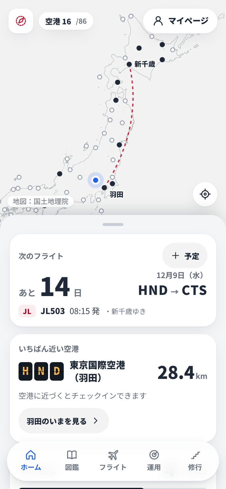
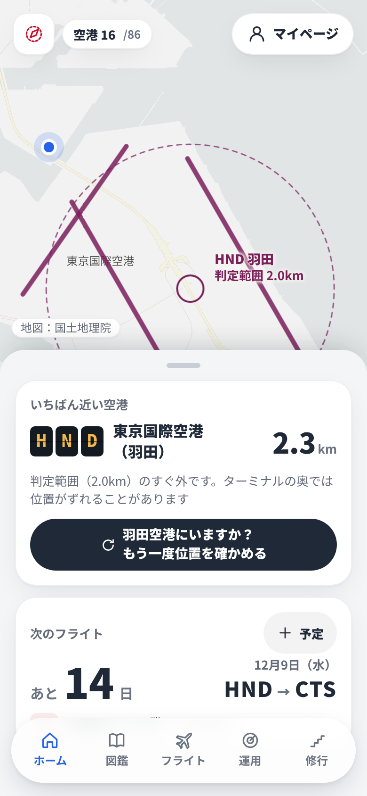
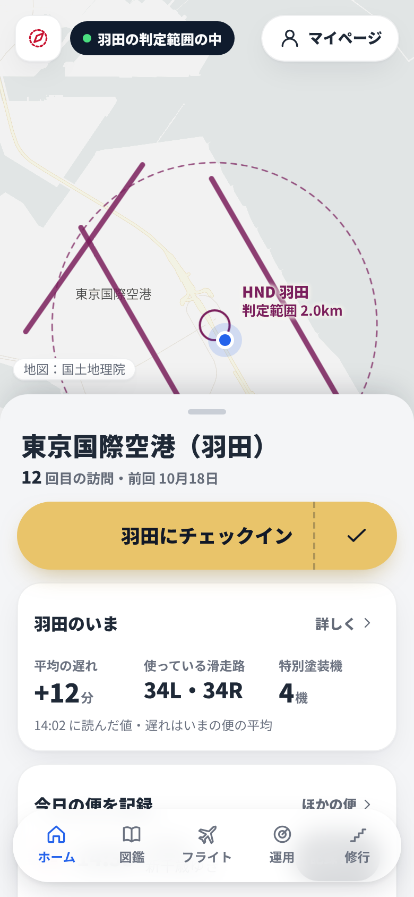
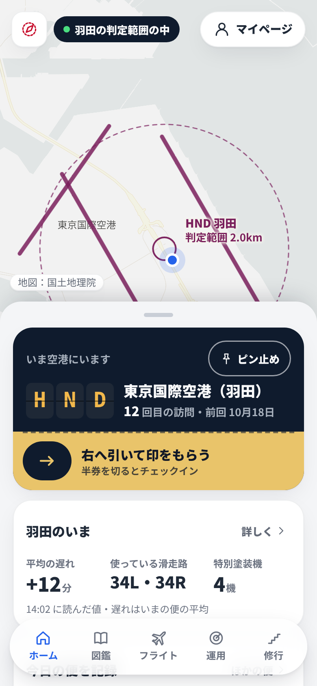

骨格は今のまま「地図とシート」。シートは小・ふつう・大の3段で、空港の判定範囲の中か外かで中身が入れ替わる。各 HTML は ?night=1 で夜、?tabs=a で下のタブ4つ（design/ia-ops の案A）。390 と 375 で撮影。地図はデモで撮った今の地図（国土地理院）

N1 ふだん・次のフライトあり次のフライト（あと○日）→いちばん近い空港と距離→次の小目標。押せないチェックインは出さない。近い空港のコード（パタパタ）は白いカードの中に小さく残す

N5 空港のすぐ外（位置がずれた）判定範囲のすぐ外（ターミナルの奥で位置がずれた）：「羽田空港にいますか？もう一度位置を確かめる」。押すと測り直すだけで、印は範囲の中でしか押せない

A1 空港にいる・案A 全幅のピル案A：全幅の金のピル「羽田にチェックイン」。押すと右の半券が切れて落ち、「本日チェックイン済み」に変わる（0.36秒）

B1 空港にいる・案B 半券を活かす（おすすめ）案B（おすすめ）：今の黒いカードを残し、半券を下の横長に。つまみを右へ引いて切る（7割で切れる）。親指の届く所で、ポケットの中の誤操作も起きにくい